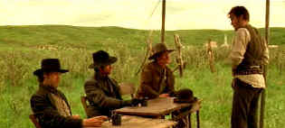

| Texas Rangers/ C+, C+ |
| Dimension/2001/90/ANA 2.35 |
In the late 1860s, Texas is overrun by lawless bands
of raiders. Local law enforcement is unable to control them. The governor
decides that resurrecting the disbanded Texas Rangers is the answer
to the problem. Troubled and ill former Ranger Leander McNelly reluctantly
agrees to head up the Rangers.
The Ranger recruitment is short and effective,
providing an introduction to a number of characters, and is actually
probably the best Texas Rangers has to offer. Happily this is a
western that doesn't try to blaze any new trails but rides its course
along some tried and true western standards. Perhaps Texas Rangers takes
itself too seriously, but that's a lot better than a joke fest in the
west. Violence happens on a hair trigger in Texas Rangers. Dialogue
isn't very convincing and the speech making is far from rousing. The film
plays more like a pilot for a television series.
 |
|
Let the recruitment begin.
©Dimension
|
Dylan McDermott as Leander McNelly lacks the
charismatic screen substance to lead the film much less lead the Rangers.
Every war campaign has a conscience figure and Texas Rangers is no
exception with recruit Lincoln Rogers Dunnison providing a measure of
brains and reason. James Van Der Beek is good enough as Rogers, but the
script fails to create a truly interesting character arc. It tries hard to
produce a strong coming of age strain with Dunnison, but it doesn't ring
true. Big bad guy John King Fisher is played with broad and obvious
strokes by Alfred Molina.
Director Steve Minor keeps the action moving through
the dust but fails to illuminate the Western with anything more than a
plodding trot. The score harks back to some of those big widescreen
fifties and sixties westerns boosting the testosterone.
Maybe its the dusty landscapes that gives Texas Rangers
a less than satisfying look and maybe its the transfer. The result is some
rather pale outdoor scenes. Other sequences are well saturated with good,
robust color. The biggest problem with the DVD is prominent peaking on
edge transition. Black levels are slightly homogenized with a slightly
pinched contrast range. The Dolby Digital 5:1 surround mix is very
aggressive.
Reviewed on a Sharp XVC-9000U DLP Projector |
|
|
|

Selections from the Feature
Archive include articles on Akira Kurosawa, Frank Darabont, Blonde Bimbos, Hollywood Street Gangs, or Vietnam: The Hollywood Pariah, and many
more....
A Western is a Western is a Western

Place or time it's still a Western from John Ford's Drums Along the Mohawk
to John Sturges' Bad Day at Black Rock.

The Movie Poster Archive
includes extensive poster images from the films of stars like Susan
Hayward, Kirk Douglas, Katharine Hepburn and many more. Our featured
star is Errol Flynn.

Nights of Cabiria(SE)A,A

Bravura simplicity of Fellini’s vision perfectly mates with the
unadorned tale of Cabiria, the feisty yet innocent prostitute. Don't pass
it up.

Imaging Science Foundation
The Imaging Science Foundation promotes proper standards in
home theater viewing. ISF trained technicians offer monitor calibration
services to consumers. The difference in a properly calibrated
monitor can be astounding. Click on the image to find an ISF member near
you.

Nearly 40 key software and hardware companies representing
leading consumer electronics giants, major movie studios home video and
music video units have joined forces to establish the DVD Video Group.
|